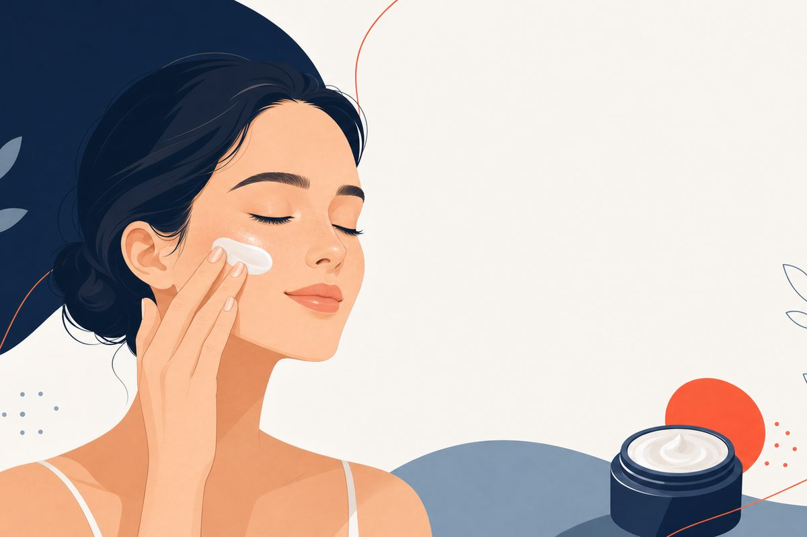

Key Clinical Points
- Rosacea care is matched to the features present: bumps, persistent redness, visible vessels, or eye symptoms.[2][3][4]
- Azelaic acid 15% gel and foam are approved for inflammatory papules and pustules, not established as a stand-alone solution for redness-only disease.[9][10]
- Prescription gel and foam are not proven interchangeable with OTC 10% cosmetic products.[9][10][11][12]
- Topical response takes weeks; reassess if there is no improvement after 12 weeks of azelaic-acid therapy.[4][9][10]
- Excessive or persistent irritation calls for stopping the product and contacting the prescriber, not pushing through.[9][10]
- Eye pain or vision changes need prompt in-person assessment.[4][5]
- Gentle skin care, moisturizer, and sun protection are part of the treatment plan.[4][13]

What Is Rosacea?
Rosacea is a chronic inflammatory skin condition that primarily affects the central face, the cheeks, nose, chin, and forehead. Estimates suggest it affects roughly 5-10% of the global population, with higher rates in people of Northern European ancestry and in those with fair skin (Fitzpatrick types I-II). Women are diagnosed more often, but men tend to develop more severe manifestations, including the disfiguring skin changes of rhinophyma.[1]
Rosacea follows a relapsing course. Patients cycle through periods of flare and relative calm, often triggered by identifiable environmental or lifestyle factors. Left unmanaged, the condition tends to progress over years, persistent redness can become permanent, and inflammatory papules can recur more frequently. Starting treatment early gives you the best chance of keeping the disease under good control.
In clinical practice, rosacea patients often arrive frustrated, having tried over-the-counter products for months. The key shift in understanding is this: rosacea is not a cosmetic problem you can treat with more moisturizer. It is an inflammatory vascular disease that requires targeted medical management.
The Four Subtypes of Rosacea
The 2002 National Rosacea Society (NRS) classification described four subtypes based on the predominant clinical features. These remain a useful framework for organizing what you see, even as current guidelines have moved toward a more flexible phenotype-based approach.[2]
Subtype 1: Erythematotelangiectatic (ETR)
This is the most common subtype, characterized by persistent central facial redness and a history of recurrent flushing or blushing. You may notice visible small blood vessels (telangiectasia) under the skin surface, particularly around the nose and cheeks. The skin often burns, stings, or feels tight, especially after temperature changes. Wind, sun, hot beverages, and emotional stress are frequent triggers. In darker skin tones, the redness may appear as a brown or purple discoloration rather than a classic red flush.
Subtype 2: Papulopustular
Papulopustular rosacea features persistent central facial redness accompanied by transient acne-like papules (red bumps) and pustules (pus-filled bumps). This subtype is commonly misidentified as acne, but there is a critical distinguishing feature: rosacea never produces blackheads or whiteheads (comedones). The bumps in papulopustular rosacea are superficial and spread beyond the follicle, whereas acne originates inside the hair follicle.[5] Perioral and perinasal involvement can occur, and burning or stinging sensations are common.
Subtype 3: Phymatous
Phymatous rosacea involves progressive skin thickening, irregular nodularities, and enlargement of affected areas. Rhinophyma, enlargement and irregular thickening of the nose, is the most recognizable form. Phymatous changes can also affect the chin (gnathophyma), forehead (metophyma), cheeks, and ears. This subtype occurs more often in men and tends to develop after years of inadequately treated ETR or papulopustular disease. Early treatment with low-dose doxycycline or isotretinoin can slow progression; established rhinophyma requires laser or surgical correction.
Subtype 4: Ocular Rosacea
Ocular rosacea affects the eyes and eyelids and is present in up to 58% of rosacea patients, yet it remains one of the most frequently overlooked subtypes. In roughly 15-20% of cases, eye symptoms appear before any skin changes develop, which often leads to years of misdiagnosis and inadequate treatment.[8] Symptoms include a gritty or foreign body sensation in the eye, eyelid redness and telangiectasia, crusting along the lash line, recurring chalazia (styes), and chronic dry eye from meibomian gland dysfunction. Corneal involvement can occur in severe cases and requires urgent ophthalmology referral.
The Shift to Phenotype-Based Management
In 2017, the NRS Expert Committee updated the rosacea classification system to move away from rigid subtype labels toward a phenotype-based approach. The reasoning was straightforward: most patients have overlapping features, and treatment should target the specific signs and symptoms present, not a subtype category.[1]
Under this framework, clinicians assess each of the following phenotypes and assign treatment accordingly:
- Fixed centrofacial erythema (diagnostic criterion)
- Phymatous changes (also diagnostic)
- Papules and pustules (major feature)
- Flushing/transient erythema (major feature)
- Telangiectasia (major feature)
- Ocular manifestations (major feature)
- Burning or stinging, edema, dry appearance (secondary features)
A diagnosis of rosacea requires either one diagnostic criterion or two major features. What this means practically is that I assess each patient as an individual, a person with primarily persistent redness will receive different therapy than someone whose main complaint is inflammatory papules, even if they technically fall under the same "subtype."
Many patients with papulopustular rosacea also have significant background redness (ETR features). Treating only the bumps without addressing the vascular component often produces disappointing results. A combination approach, targeting both phenotypes simultaneously, typically works better than monotherapy.
Topical Medications
Topical treatments carry the highest level of evidence in rosacea management and are the first line of therapy for most patients with mild to moderate disease.[1]
Ivermectin 1% Cream (Soolantra)
Ivermectin 1% cream is applied once daily and targets inflammatory papules and pustules of moderate to severe papulopustular rosacea. It is one of several evidence-based topical options for this phenotype. In head-to-head trials against metronidazole 0.75%, ivermectin produced significantly greater reductions in lesion count, higher Investigator Global Assessment success rates, and better quality-of-life scores.[6] It works through two mechanisms: a direct anti-parasitic effect that reduces Demodex mite density on the skin, and an anti-inflammatory effect that downregulates pro-inflammatory mediators including TLR-4, IL-8, and TNF-α. Well-tolerated; skin irritation is uncommon.
Metronidazole 0.75% and 1%
Metronidazole has decades of evidence behind it and remains a reliable option for papules, pustules, and background erythema. Available as a cream, gel, or lotion in 0.75% and 1% formulations, applied once or twice daily. It works primarily through anti-inflammatory mechanisms, inhibiting oxidative stress pathways in the skin rather than killing bacteria per se. It is an appropriate first-line choice for mild papulopustular disease and works well in combination with a gentle cleanser and broad-spectrum sunscreen.[3]
Azelaic Acid 15% (Finacea)
Prescription azelaic acid gel and foam are options for inflammatory papules and pustules of mild-to-moderate rosacea. Efficacy for redness alone is not established by the gel label. See the formulation comparison and application and safety guide below.[3][9][10]
Brimonidine Gel 0.33% (Mirvaso)
Brimonidine is an alpha-2 adrenergic agonist that causes direct vasoconstriction of superficial facial blood vessels. It is used specifically for persistent facial redness, it has no effect on papules or telangiectasia. Applied once daily or as needed, it begins working within 30 minutes and the effect lasts roughly 8-12 hours. About 58% of patients show a meaningful reduction in erythema by day 29.[1] A clinically important caution: some patients experience rebound erythema, a temporary worsening of redness after the medication wears off. Use with caution in patients with cardiovascular insufficiency or Raynaud's phenomenon.
| Medication | Formulation | Target Phenotype | Dosing |
|---|---|---|---|
| Ivermectin 1% (Soolantra) | Cream | Papules, pustules | Once daily |
| Metronidazole 0.75-1% | Cream, gel, lotion | Papules, pustules, mild erythema | Once or twice daily |
| Azelaic acid 15% (Finacea) | Gel, foam | Papules and pustules; not established for redness alone | Twice daily |
| Brimonidine 0.33% (Mirvaso) | Gel | Persistent facial erythema | Once daily (as needed) |
| Oxymetazoline 1% (Rhofade) | Cream | Persistent facial erythema | Once daily (as needed) |
Azelaic Acid for Rosacea: 10% vs. 15%, Gel vs. Foam
Is prescription azelaic acid worth discussing for rosacea?
If your rosacea includes inflammatory bumps and pustules, prescription azelaic acid 15% is one evidence-based topical option. It is not a cure, and the best choice depends on which features you have, how sensitive your skin is, and what you have already tried. The US gel and foam labels cover the inflammatory papules and pustules of mild-to-moderate rosacea.[3][4][9][10][14]
Redness needs a more precise answer. Redness accompanying inflammatory bumps can improve as the inflammation settles. The gel label specifically says effectiveness for redness without papules or pustules has not been evaluated. Persistent flushing or visible vessels may need a different treatment plan; do not assume an azelaic-acid serum will address every form of facial redness.[3][9][11][14]
Is OTC azelaic acid 10% the same as prescription 15%?
No equivalence should be assumed. The prescription 15% gel and foam have formulation-specific rosacea trials and US labeling. A cosmetic product marketed with 10% azelaic acid is not interchangeable simply because it contains the same named ingredient. Concentration, vehicle, other ingredients, and the condition being treated all matter. The evidence reviewed for this update did not establish that an OTC 10% product produces the same rosacea outcomes as prescription 15%.[9][10][11][12][14]
| Formulation | What the evidence supports | Practical distinction |
|---|---|---|
| OTC 10% cosmetic products | Not established as equivalent to the prescription rosacea formulations reviewed here | Check the full ingredient list; do not infer FDA rosacea approval from the ingredient name |
| Prescription 15% gel | Inflammatory bumps in mild-to-moderate rosacea; vehicle-controlled and metronidazole-comparison trials | Thin layer twice daily under its label; local stinging and irritation can occur |
| Prescription 15% foam | Inflammatory bumps in mild-to-moderate rosacea; vehicle-controlled trials | Shake before use, apply a thin layer twice daily; flammable propellant precautions apply |
Azelaic acid gel versus foam: is one better?
Both have evidence for papulopustular rosacea. The foam trial compared foam with its vehicle, not with azelaic acid gel. The gel trials used different populations, protocols, and assessment methods. Comparing irritation percentages across those separate studies cannot prove that one formulation is gentler or more effective for you. Selection can reasonably consider the formulation you tolerate, access, and cost, with the prescriber confirming the specific product.[9][10][12]
Azelaic acid versus metronidazole: what did the trial show?
A 15-week randomized trial involving 251 patients compared twice-daily 15% azelaic acid gel with twice-daily 0.75% metronidazole gel. Mean inflammatory-lesion reduction was 72.7% versus 55.8%, favoring azelaic acid. Neither treatment produced a clinically appreciable improvement in visible small vessels. This is evidence about those two formulations in that study, not proof that every patient should switch from metronidazole or that foam gives the same comparative result.[11]
Metronidazole remains an established rosacea option. A systematic review supports azelaic acid, ivermectin, and metronidazole for inflammatory lesions with differing certainty of evidence. Treatment choice should include tolerability and prior response, not just one percentage from one trial.[3][4][14]
How to Use Azelaic Acid: Timeline, Moisturizer, and Side Effects
How long does azelaic acid take to work?
Think in weeks, not overnight results. AAD guidance for topical rosacea medicines says a slight improvement may appear in 3 to 4 weeks, while a noticeable difference often takes 2 to 3 months. That is a general expectation, not a guaranteed azelaic-acid response time. The prescription gel and foam programs used 12-week treatment periods, and their labels call for reassessment if there is no improvement after 12 weeks.[4][9][10]
Do you apply azelaic acid before or after moisturizer?
A simple starting sequence is gentle cleansing, patting dry, prescription medication, then moisturizer. AAD skin-care advice puts rosacea medication before moisturizer. The product labels say to cleanse gently and pat dry before application, and to wait until the medication has dried before applying cosmetics. Avoid scrubbing, abrasive products, alcohol-based toners, or peeling agents.[9][10][13]
Follow the instructions for your actual prescription rather than a routine copied from social media. Both cited US formulations are labeled for twice-daily use, but a clinician may adjust the plan if tolerability is a problem. Do not use extra product to make it work faster, cover it with an occlusive dressing, or apply it in or around the eyes, mouth, or other mucous membranes.[9][10]
What if azelaic acid burns or stings?
Burning, stinging, itching, dryness, or irritation can occur, especially early in treatment. Strong or persistent burning is not evidence that the medicine is “working,” and an inflamed rash should not automatically be labeled a purge. Stop and contact the prescriber if irritation is excessive or persistent, or if an allergic reaction occurs. A simpler cleanser/moisturizer routine can reduce unnecessary irritation, but it does not replace reassessment of a significant reaction.[9][10][13]
| What happens | What to do |
|---|---|
| Brief mild stinging or dryness | Review gentle skin care and discuss tolerability if it persists; do not add more irritating products |
| Excessive or persistent irritation | Stop use and contact the prescriber |
| New abnormal lightening of the skin | Report the change; the labels warn about hypopigmentation |
| Worsening asthma or wheezing | Seek prompt medical advice; severe breathing difficulty needs emergency care |
| Facial/throat swelling or breathing trouble suggesting a serious allergic reaction | Stop the product and obtain emergency care |
| Eye exposure | Rinse with plenty of water; seek care if irritation persists or vision is affected |
Foam-specific precaution: its propellant is flammable. Avoid fire, flame, and smoking during and immediately after application; follow the canister's storage and handling warnings. This is a formulation warning, not evidence that gel and foam have different clinical effectiveness.[10]
Can you use azelaic acid with tretinoin or other active products?
Do not automatically layer an acne or anti-aging routine onto sensitive rosacea skin. The azelaic-acid labels caution against abrasive and peeling products, and AAD recommends avoiding common irritating skin-care ingredients. If you already use tretinoin, an exfoliating acid, benzoyl peroxide, or another prescription topical, ask the prescriber to decide what to continue, separate, or stop. This is a tolerability precaution, not a claim that every combination is prohibited.[9][10][13]
No universal azelaic-acid/tretinoin schedule for rosacea was established in the evidence reviewed for this update. We therefore do not provide an unsupervised combination regimen. The clinician should account for whether you are treating rosacea, acne, another condition, or more than one problem.
What if treatment is not helping?
A licensed clinician can review the diagnosis, actual product, application routine, irritation, and whether the main problem is bumps, persistent redness, or both. Either an appropriate video review or an in-person visit may be a starting point for uncomplicated cutaneous rosacea. Eye pain, visual changes, severe swelling, uncertain diagnosis, or persistent treatment failure favors in-person or specialist assessment. Do not increase strength or keep layering new products without a review.[2][4][9][10]
Oral Medications
Low-Dose Doxycycline 40 mg Modified-Release (Oracea)
Oracea is an FDA-approved oral option for the inflammatory lesions of rosacea. Its 40 mg modified-release formulation is used for anti-inflammatory treatment at subantimicrobial exposure, rather than as a conventional antibiotic course. Other approved oral options now exist; selection should be individualized by the treating clinician.[3][4]
In clinical trials, 40 mg modified-release doxycycline reduced inflammatory lesion counts significantly at 16 and 52 weeks, with relapse rates lower than placebo even after stopping. Side effects are similar to placebo at this dose, far fewer GI complaints than standard doxycycline 100 mg. Take it in the morning with a full glass of water, and avoid lying down for at least 30 minutes to prevent esophageal irritation.
What The recommendation for patients: this is not a short course of antibiotics. For most people, it is a maintenance medication used for months, sometimes years, alongside a topical agent.
Oral Isotretinoin
Isotretinoin is reserved for severe or refractory rosacea, cases that have not responded adequately to topical therapy and low-dose doxycycline, or patients with significant phymatous changes. It is effective across all rosacea phenotypes, including for reducing sebaceous gland hyperplasia that contributes to rhinophyma. Doses used in rosacea (0.25-0.5 mg/kg/day or lower "microdose" regimens of 0.04-0.11 mg/kg) are generally lower than those used for acne.[1]
Isotretinoin requires enrollment in the iPLEDGE risk management program due to its teratogenicity. Monthly lab monitoring for liver enzymes and lipids, plus regular office visits, are required. This is not a medication to be started over telehealth, it needs in-person dermatology management. Referral is appropriate for any patient in this category.
The Demodex Connection
Demodex folliculorum mites can occur on healthy skin and may be more numerous in rosacea-affected skin. Their role is one part of a complex inflammatory condition, not proof that rosacea is simply an infestation.[5][6]
The mechanisms linking Demodex to rosacea inflammation are an active area of research. The current model suggests several pathways: the mites physically block follicular openings, triggering an inflammatory response; their bacterial co-inhabitants (including Bacillus oleronius) release proteins that activate immune pathways; and Demodex antigens stimulate Toll-like receptor 2 (TLR-2) on keratinocytes, amplifying the innate immune response already dysregulated in rosacea-prone skin.
Topical ivermectin has anti-inflammatory and anti-Demodex activity. The cited 2022 observational study evaluated mite infestation and relapse over time; it does not establish a 2025 microbiome finding or superiority over every other topical treatment.[6][14]
The role of Demodex does not mean rosacea is simply a mite infestation. Plenty of patients with high Demodex counts have minimal rosacea, and some rosacea patients have relatively normal mite densities. The mites are one aggravating factor within a more complex inflammatory picture involving vascular dysregulation, innate immune dysfunction, and environmental triggers.
Identifying and Avoiding Your Triggers
Trigger avoidance is the single most cost-effective thing a rosacea patient can do. No medication works as well as it should if the provocative factors remain unaddressed. The NRS has documented the most common triggers across thousands of patients.[2]
Top Rosacea Triggers
- Sun exposure, UV radiation is the most frequently reported trigger. Daily broad-spectrum SPF 30+ sunscreen (physical/mineral formulations with zinc oxide or titanium dioxide are better tolerated) is non-negotiable.
- Alcohol, especially red wine, beer, bourbon, and champagne. The vasodilatory effect of alcohol is direct and dose-related. Even small amounts can trigger significant flushing in susceptible patients.
- Spicy foods, capsaicin activates transient receptor potential (TRP) channels on sensory neurons in the skin, causing neurogenic vasodilation and flushing. Hot sauces, chili peppers, and paprika are common culprits.
- Heat and temperature extremes, hot baths, saunas, steam rooms, exercise in high heat, and even hot beverages. Core body temperature elevation is a reliable trigger for most patients.
- Cold and wind, temperature extremes in both directions can provoke flares.
- Emotional stress and anxiety, neurogenic flushing pathways link psychological stress to cutaneous vascular response.
- Histamine-rich foods, aged cheeses, processed meats, red wine, vinegar, and certain fermented foods contain histamine that can amplify vascular reactivity.
- Skincare products with alcohol, witch hazel, or fragrance, these are common irritants in otherwise benign-looking products.
Keep a simple daily log for 2-4 weeks. Record what you ate, your activity level, weather conditions, stress levels, and how your skin looked that day. Patterns usually emerge within a week or two. Patients are often surprised to discover their most important trigger is something they never suspected, sometimes even a "healthy" food like spinach, avocados, or citrus.
Rosacea vs. Acne vs. Lupus
Getting the diagnosis right matters because these three conditions look similar but require fundamentally different management. Treating rosacea with standard acne regimens (benzoyl peroxide in high concentrations, astringents, retinoids at full strength) can dramatically worsen symptoms. Missing lupus has serious medical consequences.
Rosacea vs. Acne Vulgaris
The most reliable distinguishing feature: rosacea never produces comedones (blackheads or whiteheads). If you see comedones, think acne, not rosacea. Other differences:
| Feature | Rosacea | Acne Vulgaris |
|---|---|---|
| Comedones (blackheads/whiteheads) | Absent, never present | Present, hallmark feature |
| Location | Central face (cheeks, nose, chin, forehead) | Any area: face, chest, back, shoulders |
| Skin sensation | Burning, stinging, heat | Usually no burning or stinging |
| Background redness | Persistent, often worsens with triggers | Localized around lesions, not persistent |
| Flushing history | Common, often preceded disease by years | Not characteristic |
| Age of onset | Typically 30-60 years | Adolescence through early adulthood (most common) |
| Triggers | Sun, heat, alcohol, spicy food, stress | Hormonal changes, oil, certain cosmetics |
Rosacea vs. Lupus (Systemic Lupus Erythematosus, Malar Rash)
The malar butterfly rash of lupus erythematosus can look remarkably similar to ETR rosacea. Both cause bilateral facial redness across the cheeks and nose. The key differentiators are location, associated symptoms, and laboratory findings:
- Nasolabial fold involvement: Rosacea involves the nasolabial folds. The lupus malar rash characteristically spares them, staying on the raised cheekbone area.
- Systemic symptoms: Lupus causes joint pain, fatigue, fever, oral ulcers, hair loss, and kidney disease. Rosacea is confined to skin and eyes.
- Telangiectasia and papules: Visible blood vessels and pus-filled bumps are common in rosacea. The lupus rash is typically flat or slightly raised without pustules or prominent telangiectasia.
- Sun behavior: Both worsen with sun exposure, but the lupus rash is more photosensitive and can trigger systemic flares.
- Duration: The lupus malar rash tends to be more persistent; rosacea flares and fades more predictably with triggers.
If your facial redness is accompanied by joint pain, unexplained fatigue, fever, oral sores, hair thinning, or any kidney symptoms (swelling, foamy urine), see a physician promptly. An antinuclear antibody (ANA) panel and other autoimmune labs can confirm or rule out lupus. This is not a diagnosis to make from appearance alone.
Ocular Rosacea: The Often-Overlooked Subtype
I want to spend time on this because it is genuinely underdiagnosed, and missing it can cause real, lasting harm to a patient's vision.
Ocular rosacea affects up to 58% of people with cutaneous rosacea, but because patients and physicians often focus on the skin, the eye involvement goes unaddressed.[8] In about 15-20% of cases, ocular symptoms precede any visible skin changes, meaning patients may have been seeing eye doctors for years without the connection ever being made.
What Ocular Rosacea Looks Like
The primary mechanism is meibomian gland dysfunction (MGD), the meibomian glands along the eyelid margin become inflamed and produce abnormally thick secretions that obstruct the gland openings. This disrupts the lipid layer of the tear film, leading to rapid evaporation and dry eye disease. Over time, meibomian gland atrophy can occur.
Symptoms and signs include:
- Gritty, burning, or foreign body sensation in the eyes
- Redness and telangiectasia along the eyelid margins
- Crusting or flaking at the base of the eyelashes (blepharitis)
- Recurring styes or chalazia (eyelid lumps)
- Chronic dry eye with intermittent watering
- Light sensitivity (photophobia)
- Conjunctival redness and occasional conjunctivitis
- In severe untreated cases: corneal vascularization, scarring, or ulceration
Management of Ocular Rosacea
Treatment is graded by severity:
- Mild: Warm compresses applied to the closed eyelids for 5-10 minutes twice daily, followed by gentle eyelid margin cleansing with a diluted baby shampoo or commercially available eyelid cleanser. Artificial tears for lubrication. Omega-3 fatty acid supplements have supportive evidence for improving meibomian gland secretion quality.[4]
- Moderate: Topical cyclosporine eye drops (Restasis) twice daily to reduce ocular surface inflammation. Ophthalmic azithromycin applied to the eyelid margins. Oral doxycycline (40 mg modified-release or low-dose standard) is highly effective for ocular rosacea, this is one context where systemic treatment is often necessary even for milder skin disease.[8]
- Severe / corneal involvement: Ophthalmology referral is required. IPL applied to the periocular area has shown benefit for meibomian gland function in rosacea patients. Corneal ulcers or vascularization need specialist management immediately.
The practical takeaway: if your eyes feel chronically irritated, gritty, or dry and you have any degree of facial redness, mention both sets of symptoms to your physician. They may be the same disease.
Laser and IPL for Persistent Redness and Telangiectasia
Medications manage inflammation and reduce flares, but they cannot eliminate established telangiectasia (permanently dilated blood vessels visible under the skin) or reverse significant background erythema. For these features, laser and intense pulsed light (IPL) therapy offer the most durable results.[1]
How These Treatments Work
Laser and IPL devices target oxyhemoglobin in superficial blood vessels using selective photothermolysis, energy is absorbed by the red pigment in the vessel, generating heat that damages the vessel wall without harming surrounding tissue. The damaged vessel is then reabsorbed by the body over several weeks.
Devices Used in Rosacea
- Pulsed-dye laser (PDL, 585-595 nm): The most studied device for rosacea-associated erythema and telangiectasia. Targets oxyhemoglobin precisely. Multiple sessions (typically 3-6) spaced 4-6 weeks apart are standard. Also shown to reduce Demodex mite density and perirosacea inflammation in some studies.
- Intense pulsed light (IPL): Delivers multiple wavelengths rather than a single laser wavelength. Treats both erythema and the background redness of ETR. Generally gentler on the skin, more sessions are needed but patient satisfaction is high. Also FDA-cleared for ocular rosacea symptoms via periocular application.
- KTP laser (532 nm) and Nd:YAG laser (1064 nm): Options for telangiectasia and deeper vessels that PDL may not fully reach.
- CO2 and Er:YAG lasers: Used for phymatous changes and rhinophyma, ablative lasers that remove and reshape excess tissue.
These procedures require a board-certified dermatologist or trained laser specialist with experience in facial vascular treatments. Results are not permanent, the tendency for new vessel growth continues, and maintenance sessions are typically needed every 1-2 years. Patients with darker skin tones (Fitzpatrick types V-VI) require more conservative settings and careful device selection to minimize post-inflammatory changes.
Get the inflammatory component under medical control before pursuing laser or IPL. Treating active papulopustular rosacea with laser can worsen flares. A standard approach is 3-6 months of topical ± oral therapy first, then laser for any residual telangiectasia or persistent redness that doesn't respond to medications.
Telehealth Dermatology for Rosacea
Rosacea is well-suited for telehealth evaluation. The diagnosis is primarily visual, central facial erythema, papules, and pustules are assessed reliably from high-quality photographs or a video visit. A board-certified physician can confirm the clinical picture, screen for red flags, prescribe topical or oral treatment, and provide a complete trigger management plan, all without an in-office visit.[7]
A 2024 retrospective study compared 220 asynchronous teledermatology cases with 80 in-person rosacea cases. It describes practice patterns and follow-up, rather than establishing universal equivalence of remote and in-person diagnosis. Its limitations include retrospective design, a predominantly White cohort, and lower follow-up adherence among remote patients.[7]
What Telehealth Can Manage Well
- Classic papulopustular or erythematotelangiectatic rosacea with typical central facial features
- First-time rosacea diagnosis with photo confirmation
- Prescription and monitoring of topical agents (ivermectin, metronidazole, azelaic acid, brimonidine)
- Initiating and monitoring low-dose doxycycline 40 mg (Oracea)
- Follow-up visits and treatment adjustments for established rosacea
- Trigger counseling and skincare guidance
- Distinguishing rosacea from acne based on history and photographic assessment
When In-Person or Specialist Care Is Needed
- Ocular rosacea with eye pain, vision changes, or corneal involvement, ophthalmology referral
- Rhinophyma or significant phymatous changes, surgical dermatology
- Refractory disease requiring isotretinoin, in-person dermatology for iPLEDGE enrollment and monitoring
- Laser or IPL treatment for telangiectasia, in-person procedure
- Systemic symptoms suggesting lupus, rheumatology evaluation
A licensed clinician can help select the appropriate setting. Uncomplicated skin symptoms may be reviewed by video or in person; eye symptoms, uncertain diagnoses, and complex or refractory disease need the relevant in-person assessment.
Putting It Together: A Practical Treatment Framework
Here is how I approach rosacea management in clinical practice, using the phenotype-based model:
| Phenotype | First-Line Options | For Moderate-Severe or Refractory Cases |
|---|---|---|
| Persistent erythema / flushing | Trigger avoidance, SPF, gentle skin care; topical brimonidine or oxymetazoline for redness relief | IPL or PDL laser; oral beta-blockers or clonidine for flushing; low-dose doxycycline |
| Papules and pustules | Topical ivermectin 1%, or azelaic acid 15%, or metronidazole 0.75-1%; low-dose doxycycline 40 mg (Oracea) for moderate cases | Combination ivermectin + doxycycline; isotretinoin for refractory disease (dermatology referral) |
| Telangiectasia | Trigger avoidance, SPF; IPL or PDL laser for visible vessels | Repeat laser sessions; KTP or Nd:YAG for deeper vessels |
| Phymatous changes | Low-dose doxycycline to slow progression; topical retinoid | Isotretinoin; CO2 or Er:YAG laser for established rhinophyma (dermatology referral) |
| Ocular rosacea | Warm compresses, eyelid hygiene, artificial tears, omega-3 supplements | Cyclosporine drops, oral doxycycline 40 mg; ophthalmology for corneal involvement |
All patients with rosacea should use a mineral-based sunscreen (SPF 30 or higher) every morning regardless of weather, a gentle fragrance-free cleanser, and a simple non-irritating moisturizer. Stripping the skin barrier with harsh products makes every phenotype worse.
Frequently Asked Questions
References
- Nguyen C, Kuceki G, Birdsall M, et al. Rosacea: Practical Guidance and Challenges for Clinical Management. Clinical, cosmetic and investigational dermatology. 2024;17:175-190. https://pubmed.ncbi.nlm.nih.gov/38283794/
- National Rosacea Society. Rosacea Treatment Algorithms. Accessed September 27, 2026. Rosacea.org. https://www.rosacea.org/physicians/rosacea-treatment-algorithms
- National Rosacea Society. FDA-Approved Treatments for Rosacea. Rosacea.org. https://www.rosacea.org/patients/management-options/fda-approved-rosacea-treatments
- American Academy of Dermatology. Rosacea: Diagnosis and Treatment. AAD.org. Updated April 2024. https://www.aad.org/public/diseases/rosacea/treatment/diagnosis-treat
- Farshchian M, Daveluy S. Rosacea. StatPearls Publishing. Updated August 8, 2023. https://www.ncbi.nlm.nih.gov/books/NBK557574/
- Trave I, Micalizzi C, Cozzani E, et al. Papulopustular Rosacea Treated With Ivermectin 1% Cream: Remission of the Demodex Mite Infestation Over Time and Evaluation of Clinical Relapses. Dermatology practical & conceptual. 2022;12(4):e2022201. https://pubmed.ncbi.nlm.nih.gov/36534532/
- Shah VK, Camacho RC, English JC 3rd. Managing rosacea using asynchronous consumer to physician teledermatology as compared to in-person visits: A retrospective study. JAAD international. 2024;16:254-256. https://pubmed.ncbi.nlm.nih.gov/39135610/
- De Marchi SU, Cecchin E, De Marchi S. Ocular rosacea: an underdiagnosed cause of relapsing conjunctivitis-blepharitis in the elderly. BMJ case reports. 2014;2014. https://pubmed.ncbi.nlm.nih.gov/25239991/
- DailyMed. FINACEA azelaic acid gel, 15%. US prescribing information. Accessed September 27, 2026. https://dailymed.nlm.nih.gov/dailymed/drugInfo.cfm?setid=9f40cd45-58a6-4376-9220-84bfe7d7e358
- DailyMed. FINACEA FOAM azelaic acid aerosol, foam 15%. US prescribing information. Accessed September 27, 2026. https://dailymed.nlm.nih.gov/dailymed/drugInfo.cfm?setid=9fabd24e-4c3b-49a0-aa5f-c8d75ae67572
- Elewski BE, Fleischer AB Jr, Pariser DM. A comparison of 15% azelaic acid gel and 0.75% metronidazole gel in the topical treatment of papulopustular rosacea: results of a randomized trial. Archives of dermatology. 2003;139(11):1444-50. https://pubmed.ncbi.nlm.nih.gov/14623704/
- Draelos ZD, Elewski BE, Harper JC, et al. A phase 3 randomized, double-blind, vehicle-controlled trial of azelaic acid foam 15% in the treatment of papulopustular rosacea. Cutis. 2015;96(1):54-61. https://pubmed.ncbi.nlm.nih.gov/26244354/
- American Academy of Dermatology. 7 rosacea skin care tips dermatologists recommend. Accessed September 27, 2026. https://www.aad.org/public/diseases/rosacea/triggers/tips
- van Zuuren EJ, Fedorowicz Z, Tan J, et al. Interventions for rosacea based on the phenotype approach: an updated systematic review including GRADE assessments. British Journal of Dermatology. 2019;181(1):65-79. https://pubmed.ncbi.nlm.nih.gov/30585305/